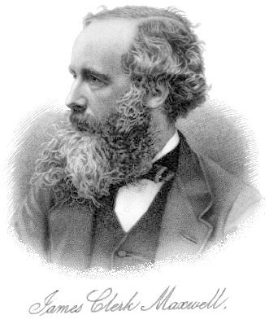

Physics · Electromagnetism · History of Science
James Clerk Maxwell
James Clerk Maxwell (1831–1879) did for electromagnetism what Newton did for gravity. His four equations — written in 1865 — unified electricity, magnetism, and optics into a single mathematical framework, predicted that light is an electromagnetic wave, and forecast the existence of radio waves two decades before Hertz detected them. Einstein kept a portrait of Maxwell on his study wall, calling his work "the most profound and the most fruitful that physics has experienced since the time of Newton."
Who Was James Clerk Maxwell?

Born June 13, 1831, in Edinburgh, Scotland. From childhood he was relentlessly curious — submitting his first geometry paper to the Royal Society of Edinburgh at age 14. His mother died when he was 8, and his father, a lawyer and inventor, raised him with deep intellectual encouragement. Friends called him "Dafty" — a local Scottish term for someone pleasantly eccentric.
At Cambridge, Maxwell graduated second wrangler in 1854 — a stunning result for a man who wrote poetry and studied colour perception as recreation. He held professorships at Marischal College (Aberdeen), King's College London, and finally became the first Cavendish Professor of Physics at Cambridge in 1871, where he designed the Cavendish Laboratory.
His 1865 paper "A Dynamical Theory of the Electromagnetic Field" compressed 20 equations into what we now call Maxwell's four equations — the most compressed and powerful description of classical electromagnetism ever written. From them, he calculated the speed of electromagnetic waves to be 3 × 10⁸ m/s — matching the measured speed of light — and concluded that light itself is an electromagnetic wave.
In his short life (he died of abdominal cancer at 48, the same age Newton's mother died and the same age Einstein would later discover the field equations of general relativity), Maxwell also explained the rings of Saturn (they must be particles, not solid), developed the kinetic theory of gases, and in 1861 produced the world's first durable colour photograph. He is widely regarded as the third greatest physicist of all time, behind only Newton and Einstein.
A Life in Equations
- 1831 Born in Edinburgh, Scotland.
- 1845 Age 14: submits geometry paper to the Royal Society of Edinburgh.
- 1847 Enters University of Edinburgh; studies philosophy and natural science.
- 1854 Graduates from Cambridge as Second Wrangler.
- 1856 Paper on Saturn's Rings: proves they must be made of particles, not a solid or liquid mass.
- 1859 Derives the Maxwell–Boltzmann speed distribution for gas molecules.
- 1861 Takes the world's first durable colour photograph — a tartan ribbon photographed through red, green, and blue filters.
- 1864 Presents "A Dynamical Theory of the Electromagnetic Field" to the Royal Society.
- 1865 Publishes the 20 equations (later condensed to 4) unifying electricity, magnetism, and light.
- 1871 Appointed first Cavendish Professor of Physics at Cambridge; designs the Cavendish Laboratory.
- 1879 Dies of abdominal cancer, aged 48, in Cambridge.
- 1888 Heinrich Hertz detects radio waves — confirming Maxwell's prediction 9 years after Maxwell's death.
The Four Equations That Changed Everything
Before Maxwell, electricity and magnetism were studied as separate phenomena. Coulomb had described electric force. Faraday had discovered induction. Ampère had described the magnetic force of currents. Maxwell's genius was to unify all of this — and in doing so, to predict something neither Faraday nor Ampère had imagined: that oscillating fields would propagate through space as waves at the speed of light.
Gauss's Law for Electricity
∇·E = ρ/ε₀Electric field lines originate from electric charges. A positive charge pushes field lines outward; a negative charge pulls them in. The total flux through any closed surface equals the enclosed charge divided by ε₀.
Gauss's Law for Magnetism
∇·B = 0There are no magnetic monopoles. Every magnetic field line that enters a closed surface must also exit it — north and south poles always come in pairs. Magnetic field lines form closed loops.
Faraday's Law of Induction
∇×E = −∂B/∂tA changing magnetic field creates a circling electric field. This is the principle behind every electric generator, transformer, and induction motor. Faraday discovered it experimentally; Maxwell wrote it mathematically.
Ampère–Maxwell Law
∇×B = μ₀J + μ₀ε₀∂E/∂tA current OR a changing electric field creates a circling magnetic field. Maxwell's addition of the ∂E/∂t term — the "displacement current" — was the key insight that predicted electromagnetic waves.
Electromagnetic Wave Simulator
All electromagnetic waves — from radio to gamma rays — are the same phenomenon at different frequencies. Drag the frequency slider to travel across the spectrum. The E field (blue) and B field (amber) oscillate perpendicular to each other and to the direction of travel.
See the Equations Shape a Field
Choose one of Maxwell's equations, then change its source. The moving field diagram translates the symbols into the geometry they describe: spreading, looping, and induction.
∇·E = ρ/ε₀
Positive charge is a source: electric field arrows point outward.
Rebuild Maxwell's Colour Photograph
Maxwell projected red, green, and blue records of a tartan ribbon on top of one another. Mix the three light channels below—the same additive system used by every modern screen.
Additive colour
Equal red + green + blue light makes white. Turning all three off makes black.
Maxwell–Boltzmann Molecular Lab
Heat the gas and watch its molecules spread across a wider range of speeds. Temperature sets the average kinetic energy, but molecules never all travel at exactly the same speed.
vᵣₘₛ ∝ √T
Quadrupling absolute temperature doubles the root-mean-square molecular speed.
Maxwell's Key Contributions
Four equations unifying all classical electromagnetism. They describe how electric and magnetic fields are generated, interact, and propagate. Every electrical engineer, radio engineer, and optical physicist works within this framework daily.
By calculating wave speed from his own equations, Maxwell proved light is an electromagnetic wave — unifying optics with electromagnetism and ending centuries of debate about light's nature.
Maxwell's equations implied electromagnetic waves of all frequencies must exist. Hertz confirmed this in 1888, nine years after Maxwell's death — launching wireless communication, radar, and modern telecommunications.
Maxwell took three photographs of a tartan ribbon through red, green, and blue filters, then combined the projections. This established the RGB principle underlying every camera, screen, and digital image today.
Derived the Maxwell–Boltzmann distribution: the statistical spread of molecular speeds in a gas. This connected macroscopic temperature and pressure to microscopic molecular motion — founding statistical mechanics.
Proved mathematically that Saturn's rings cannot be solid or liquid — they must be composed of independently orbiting particles. The Cassini spacecraft confirmed this 150 years later.
Maxwell's Legacy Today
Every radio, TV, phone, Wi-Fi router, microwave oven, MRI scanner, and X-ray machine operates on principles described by Maxwell's equations. These are not approximations or historical curiosities — they are the exact governing laws of all classical electromagnetic phenomena, used in engineering calculations every day.
Einstein's special relativity was directly motivated by a contradiction Maxwell's equations created with Newtonian mechanics — Maxwell's equations were already relativistically correct, and it was Newton's laws of motion that had to be revised to match them.
The maxwell (Mx) is a CGS unit of magnetic flux; the SI unit of magnetic flux is the weber (Wb), but Maxwell is commemorated in the CGS name. The RGB colour model — every pixel on every screen — uses Maxwell's discovery that all colours can be mixed from red, green, and blue primaries, first demonstrated with his tartan photograph in 1861.
The James Clerk Maxwell Foundation preserves his birthplace at 14 India Street in Edinburgh as a museum, open to visitors today.
Practice Problems
Use c = 1/√(μ₀ε₀) = 3×10⁸ m/s, c = fλ, and the four equations.
Easy1. Which of Maxwell's four equations states that there are no magnetic monopoles?
Easy2. What did Maxwell calculate from his equations that matched a known experimental value and led him to conclude light is an EM wave?
Medium3. A radio wave has frequency f = 100 MHz (10⁸ Hz). Using c = fλ, what is its wavelength in metres?
Medium4. Visible light has λ = 500 nm = 5×10⁻⁷ m. Using f = c/λ, what is its frequency in THz? (1 THz = 10¹² Hz)
Challenge5. Maxwell added the "displacement current" term (μ₀ε₀ ∂E/∂t) to Ampère's Law. Why was this addition crucial?
Innovator Profile · See Also